Polygons, Prisms, and Solids
In geometry, understanding the relationships between 2D polygons and their 3D extensions is fundamental to visualizing spatial relationships. A polygon forms the base of many three-dimensional solids, with prisms being prime examples. When you master the properties of polygons (their sides, angles, and symmetry), you unlock the ability to calculate surface areas and volumes of complex solids. This foundation connects directly to architecture, engineering, and computer graphics, where basic geometric principles scale to real-world applications.
- Polygons
- Perimeter
- Apothem
- Area Of n-sided Polygons
- Prisms
- Sum Of Areas Of All Surfaces
- Total Surface Area Of Pentagon And Hexagon
- Calculating Area Of Remaining Surfaces
- Calculating Volume Of Prisms
- Solids
- Surface Area Of Solids
- Volumes Of Solids
- Optimsation Of Measures On Area And Volumes
- Composite Solids
Polygons
A polygon is a closed shape. A polygon is named by the number of its sides or angles.
Here is how naming polygons works:
| Prefix | Sides | Name |
|---|---|---|
| Tri- | 3 | Triangle |
| Quad- | 4 | Quadrilateral |
| Penta- | 5 | Pentagon |
| Hexa- | 6 | Hexagon |
| Hepta- | 7 | Heptagon |
| Octa- | 8 | Octagon |
| Nona- | 9 | Nonagon |
| Deca- | 10 | Decagon |
It is recommended that learners remind themselves about symmetry before proceeding with the latter contents of this topic.
Perimeter
The perimeter is the total distance around the outside of a 2D shape. For any polygon, you find the perimeter by adding the lengths of all its sides together. In a regular polygon, where all sides are equal, you can simply multiply the length of one side by the total number of sides.
Perimeter of a Regular Hexagon

The Formula
Perimeter (P) = s + s + s + s + s + s
For a regular hexagon with side length s, the formula is:
P = 6 × s
For any regular polygon with n sides, the general formula is:
P = n × s
Apothem
The apothem is a line segment drawn from the center of a regular polygon to the midpoint of one of its sides. In a regular polygon, every side is at an equal distance from the center, meaning all apothems are equal in length. Because the apothem acts as a perpendicular bisector, it always meets the side at a right angle (90°) and splits that side into two equal halves. This measurement is essential for calculating the size of the shape; you can find the area of any regular polygon by taking half the product of its perimeter and its apothem.

To calculate the area using perimeter and apothem, use the following formula:
A = 1⁄2 × perimeter × apothem
Area
Look at the rectangle below. Its area is bh square units. The diagonal divides the rectangle into two congruent triangles. The area of each triangle is half the area of the rectangle, or 1⁄2bh square units. This is true for all triangles.
A more formal theorem for area of a triangle states: If a triangle has an area of A square units, a base of b units, and a corresponding height of h units, then A = 1⁄2bh.
Understanding this concept about triangles will help us easily understand the next sub-topic, so make sure you complete enough practice questions before moving on.
Area of n-sided Polygons
The easiest way to understand the area of any regular polygon is to see it as a collection of identical triangles meeting at the center.
To find the area of a regular polygon, you can divide it into n sided triangles (where n is the number of sides). The area of the whole polygon is simply the area of the triangle multiplied by the number of sides.
If you are given the side length (s) and the apothem (a), treat the apothem as the height of a triangle and the side as the base.

OR
If you know the Perimeter (p) and the Apothem (a), you can use this "shortcut" formula:
A = 1⁄2 × perimeter × apothem
Prisms
A prism is a shape with a contant cross-section throughout its length. Also, the bases of all prisms are always congruent. This is means they are identical.
It is important to understand their properties and how they "unfold" 2D nets.
Triangular Prism
Defined by its two triangular bases. The net consists of three rectangles in a row with two triangles attached.
Rectangular Prism (Cuboid)
A shape where all faces are rectangles. The net is often a "cross" shape.
Pentagonal Prism
A pentagonal prism has a five-sided polygon as its cross-section.
Hexagonal Prism
A complex prism with two hexagonal bases. Its net features a long strip of six rectangles.
Did you notice a pattern when we add one extra side to the base of a prism?
For every additional side added to the base polygon, the structure of the prism follows a consistent mathematical progression. The number of Faces increases by 1, the number of Edges increases by 3, and the number of Vertices increases by 2.
This predictable pattern allows us to calculate the properties of any prism without having to draw it. For instance, if a prism is built from a base with n sides, then the number of Faces equals n + 2 (the n lateral faces plus the two bases), the number of Edges equals 3n (each base contributes n edges, plus n connecting lateral edges), and the number of Vertices equals 2n (n vertices on the top base and n on the bottom base).
Sum Of Areas Of All Surfaces
The nets from the section above will come in handy when calculating areas. So be sure to fully understand how to layout these 3D shapes into their 2D forms.
To find the total surface area(TSA) of any prism, you simply sum the areas of every shape in its 2D Net.
Triangular Prism Surface Area
Rectangular Prism (Cuboid) Surface Area
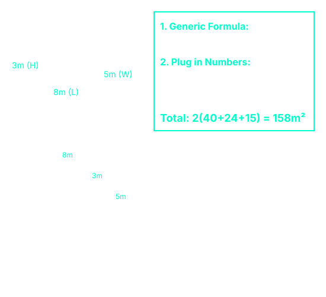
Surface Area of a Cube
A Cube is the special case of a cuboid where every face is an identical square. This makes the calculation much faster because you only need to find the area of one face and multiply it by six.
For a cube where every side (s) is 4cm.
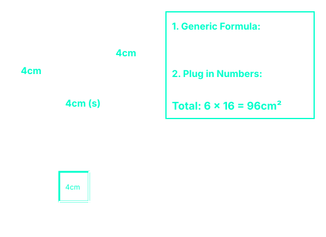
Deducing Formula For Calculating Total Surface Area Of Pentagon And Hexagon
This the standard procedure that you would follow to find the total surface area of this two prisms:
pentagonal prism
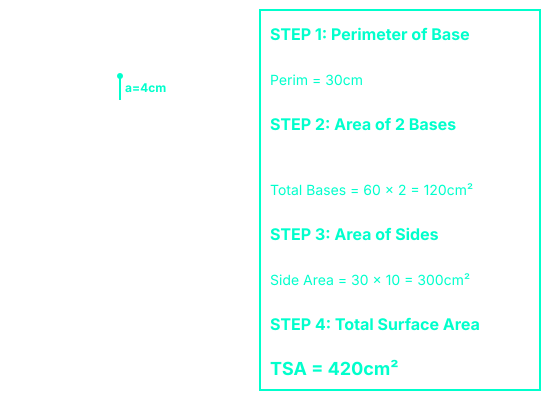
hexagonal prism
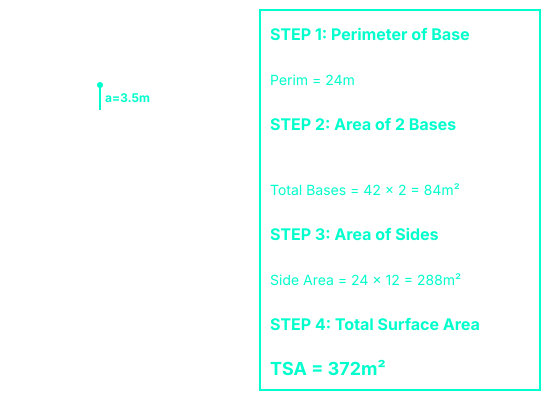
Thus we conclude that total surface area is equal to the sum of the area of both bases and the area of all the sides:
Area of both bases + Area of all sides
2 (½ × p × a) + (p × l)
p × a + p × l
p(a + l)
where: p = perimeter
a = apothem
l = length
NB: Use this formula only for finding total surface area for pentagonal and hexagonal prisms.
Calculating Area Of Remaining Surfaces
In some problems, you will not be asked to find the total surface area of a complete prism. Instead, you may encounter a shape that is open, meaning one or more faces are missing. Common examples include an open tank (no lid), an open box, or a container with one side removed.
When a prism is open, the approach is straightforward: start with the full total surface area, then subtract the area of the missing face(s).
Key Idea: Surface Area of Open Shape = Full TSA − Area of Missing Face(s)
Example: Open Rectangular Tank (No Lid)
Consider a rectangular tank with length 8m, width 5m, and height 3m. The tank is open at the top (no lid). Find the surface area of the remaining five faces.
General Rule for Open Prisms
For any prism that is open (missing one or more faces), the same logic applies:
Surface Area of Open Shape = Full TSA − Area of Missing Face(s)
This works because the net of the shape already accounts for every surface. When a prism is open, those missing faces are simply not included in the final total.
NB: Sometimes a problem will ask for the "surface area" of an open or cut shape. Always ask yourself: "What surfaces are actually present?" Then start with the full TSA and subtract what's missing. Do not try to calculate each remaining face individually, that's slower and easier to mess up.
Calculating Volume Of Prisms
While surface area deals with the outside of a 3D shape, volume measures the space inside the shape, as in, how much it can hold. Think of filling a tank with water or packing a box with cubes; that is volume.
Key Idea: Volume = Area of Base × Height (or Length)
For any prism, the formula is the same regardless of the shape of the base:
V = Abase × h
where Abase is the area of the cross-section (the base shape) and h is the perpendicular height (or length) of the prism.
Example 1: Volume of a Rectangular Prism (Cuboid)
A rectangular tank has length 8m, width 5m, and height 3m. Find its volume.

Step 1: Recall the formula for the volume of a cuboid
Volume = length × width × height
V = l × w × h
Step 2: Substitute the given values into the formula
l = 8 m, w = 5 m, h = 3 m
V = 8 × 5 × 3
Step 3: Multiply step by step
8 × 5 = 40
40 × 3 = 120
Step 4: Write the answer with the correct units
Volume = 120 m³
Answer: The volume of the tank is 120 cubic metres (120 m³).
Note: Volume is measured in cubic units (m³, cm³, etc.). A cubic metre (m³) is the amount of space occupied by a cube with side length 1 metre.
Example 2: Volume of a Triangular Prism
A triangular prism has a triangular base with base 4cm and height 3cm, and a prism length of 10cm. Find its volume.
Calculation Container
Step 1: Calculate Area of Base
base area = ½ × base × height
base area = ½ × 4cm × 3cm
base area = 6cm²
Step 2: Multiply Area Of Base By Length
V = base area × length
V = 6cm² × 10cm
V = 60cm³
Example 3: Volume of a Pentagonal Prism
A regular pentagonal prism has a base perimeter of 30cm, apothem 4cm, and length 10cm. Find its volume.
Step 1: Calculate Area of Base
base area = ½ × perimeter × apothem
base area = ½ × 30cm × 4cm
base area = 60cm²
Step 2: Multiply Area Of Base by Height
V = base area × height
V = 60cm² × 10cm
V = 600cm³
Volume of a Cube
A cube is a special rectangular prism where all edges are equal. If the side length is s, then the volume is:
V = s × s × s = s³
For any prism, volume is always Area of Base × Height. Whether the base is a triangle, rectangle, pentagon, or hexagon, the method never changes. Only the way you calculate the base area changes.
Solids
A solid is a three-dimensional object. Unlike prisms, these shapes often taper to a point (pyramids and cones) or feature curved surfaces (cylinders and spheres).
Square-Based Pyramid
A square-based pyramid has a square base and four triangular faces that slope upward to meet at a single point called the apex.
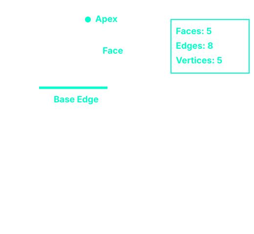
Cone
A cone is a solid with one circular base and one curved surface that tapers to a point called the apex (or vertex). It has one edge where the base meets the curved surface.
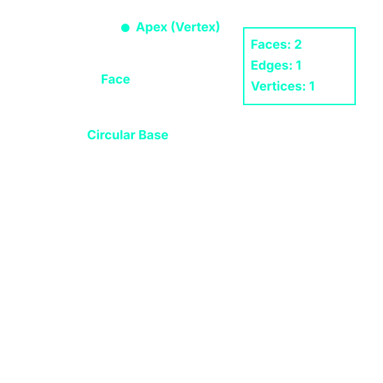
Cylinder
A cylinder has two identical circular faces (top and bottom) and one curved surface that wraps around the sides. It has no vertices and no edges.
Sphere
A sphere is a perfectly round solid where every point on its surface is the same distance from its centre. It has no faces, no edges, and no vertices.
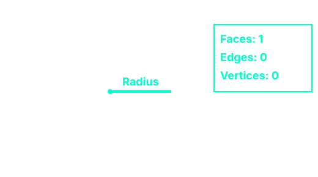
A sphere cannot be "unfolded" into a flat 2D net.
Surface Area Of Solids
The procedure for finding total surface area of a solid is the face as that for finding sum of areas of all surfaces for prisms.
Square-Based Pyramid Surface Area
A square-based pyramid has 1 square base and 4 triangular faces that slope up to the apex. To find the total surface area, we add the area of the base to the sum of the areas of the four triangular faces.
Step 1: Write Generic Formula:
TSA = s² + 4(½ × s × l)
Step 2: Plug in Numbers:
Base: 6 × 6 = 36
4 Triangles: 4 × (0.5 × 6 × 8) = 96
Total = 132cm²
Cone Surface Area
A cone has 1 circular base and 1 curved surface that tapers to the apex.
When you unwrap the curved surface of a cone, it becomes a sector of a circle. The radius of this sector is the slant height (l), and the arc length equals the circumference of the base.
Therefore, total surface area = area of a base (a circle = πr² ) + area of curved surface (sector = πrl).
Where:
r = radius of the circular base
l = slant height (distance from apex to edge of base along the curved surface)
Step 1: Generic Formula:
TSA = πr² + πrl
Step 2: Plug in (π ≈ 3.14):
Base: 3.14 × 4² = 50.24
Curved: 3.14 × 4 × 10 = 125.6
Total = 175.84cm²
Cylinder Surface Area
A cylinder has 2 indentical circular bases and 1 curved surface that wraps around.
When you "unwrap" the curved surface of a cylinder, it becomes a rectangle. The length of the rectangle equals the circumference of the base (2πr), and the width equals the height (h) of the cylinder. Thus the total surface area = area of both bases (2 circles 2πr²) + area of curved surface (circumference × height = 2πr × h).
= 2πr(r + h)
Where:
r = radius of the circular base
h = height of the cylinder
Step 1: Area of Two Circular Bases:
Area of two circles = 2 × π × 5²
= 50π cm²
Step 2: Area of Curved Surface:
Area = (2π × 5) × 12
= 10π × 12 = 120π cm²
Step 3: Total Surface Area:
TSA = 50π + 120π
TSA = 170π cm²
Sphere Surface Area
A Sphere has no flat net, but its surface area is four times the area of its circle.
Step 1: Generic Formula:
TSA = 4πr²
Step 2: Plug in Numbers:
Area = 4 × π × 3²
Total = 36π cm²
| Solid | Formula | What the letters mean |
|---|---|---|
| Square-Based Pyramid | TSA = s² + 2sl | s = side, l = slant height |
| Cone | TSA = πr² + πrl | r = radius, l = slant height |
| Cylinder | TSA = 2πr² + 2πrh | r = radius, h = height |
| Sphere | TSA = 4πr² | r = radius |
NB:You will be expected to memorise the formula for the surface area of a sphere. The formula for the curved surface area of a cone (πrl) may be provided in some exam papers, but it is better to know it
Volume Of Solids
The volume of a solid is the amount of space it occupies. While surface area deals with the outside, volume measures the inside, that is, how much a solid can hold.
Square-Based Pyramid Volume
A square-based pyramid has 1 square base and 4 triangular faces that meet at the apex. The volume of a pyramid is one-third of the volume of a prism with the same base and height.
Step 1: Generic Formula:
V = ⅓ × Area of base × height
V = ⅓ × s² × h
Step 2: Plug in Numbers:
Area of base: 6 × 6 = 36 cm²
V = ⅓ × 36 × 10
Volume = ⅓ × 360 = 120 cm³
Cone Volume
A cone has 1 circular base and 1 curved surface that tapers to the apex. Like a pyramid, the volume of a cone is one-third of the volume of a cylinder with the same base and height.
Step 1: Generic Formula:
V = ⅓ × Area of base × height
V = ⅓ × πr² × h
Step 2: Plug in Numbers (π ≈ 3.14):
Area of base: 3.14 × 4² = 50.24 cm²
V = ⅓ × 50.24 × 12
Volume = ⅓ × 602.88 = 200.96 cm³
Cylinder Volume
A cylinder has 2 identical circular bases and 1 curved surface that wraps around. The volume of a cylinder is the area of the base × height.
Step 1: Generic Formula:
V = Area of base × height
V = πr² × h
Step 2: Plug in Numbers (in terms of π):
Area of base: π × 5² = 25π cm²
V = 25π × 12
Volume = 300π cm³
Sphere Volume
A Sphere is a perfectly round solid where every point on its surface is the same distance from the center.
Step 1: Generic Formula:
V = ⁴⁄₃ × π × r³
Step 3: Plug in Numbers:
V = ⁴⁄₃ × π × 3³
V = ⁴⁄₃ × π × 27
Volume = 36π cm³
| Solid | Formula | What the letters mean |
|---|---|---|
| Square-Based Pyramid | V = ⅓ × s² × h | s = side, h = height |
| Cone | V = ⅓ × πr² × h | r = radius, h = height |
| Cylinder | V = πr² × h | r = radius, h = height |
| Sphere | V = ⁴⁄₃ × πr³ | r = radius |
NB: You will be expected to memorise the formula for the volume of a sphere (⁴⁄₃πr³). The formulas for the volume of a cone and pyramid both contain the factor "⅓", this is because they taper to a point, unlike prisms and cylinders.
Optimisation Of Measures On Area And Volumes
Before proceeding with this section, be sure to revisit limits of accuracy. If you do so, you will realise that this sub-topic is a simple application of the key rules for bounds on area and volume calculations.
Optimisation in this context means finding the maximum or minimum possible value of an area or volume when the measurements used in the calculation have been rounded.
Key Idea: Use Upper Bound to get MAXIMUM, Lower Bound to get MINIMUM for multiplication.
Example 1: Maximum Volume of a Cube
A cube has side length 6 cm measured to the nearest cm. Find the maximum possible volume of the cube.
Step 1: Find bounds
Degree of accuracy = 1 cm
Half of 1 = 0.5 cm
UB = 6 + 0.5 = 6.5 cm
Step 2: Use UB for max
Max V = 6.5 × 6.5 × 6.5
Max V = 274.625 cm³
Example 1 (continued): Minimum Volume of a Cube
Using the same cube with side length 6 cm measured to the nearest cm, find the minimum possible volume.
Step 1: Find bounds
Degree of accuracy = 1 cm
Half of 1 = 0.5 cm
LB = 6 - 0.5 = 5.5 cm
Step 2: Use LB for min
Min V = 5.5 × 5.5 × 5.5
Min V = 166.375 cm³
Example 2: Maximum and Minimum Surface Area of a Cylinder
A cylinder has a radius of 4 cm (to nearest cm) and a height of 10 cm (to nearest cm). Calculate the maximum and minimum possible total surface area. (Use π = 3.14)
MAXIMUM Surface Area
Use UB for r and h
r = 4.5 cm, h = 10.5 cm
TSA = 2×3.14×4.5×(4.5+10.5)
Max TSA = 423.9 cm²
MINIMUM Surface Area
Use LB for r and h
r = 3.5 cm, h = 9.5 cm
TSA = 2×3.14×3.5×(3.5+9.5)
Min TSA = 285.74 cm²
| Quantity | To get Maximum | To get Minimum |
|---|---|---|
| Area / Volume | Use UB | Use LB |
| Division (Speed) | UB ÷ LB | LB ÷ UB |
| Subtraction | UB − LB | LB − UB |
| Addition | UB + UB | LB + LB |
NB: Optimisation problems are simply limits of accuracy problems applied to area and volume formulas. The key steps are always:
- Find the upper and lower bounds for each measurement
- To get the maximum, use the UB for multiplication/area/volume (or UB ÷ LB for speed)
- To get the minimum, use the LB for multiplication/area/volume (or LB ÷ UB for speed)
Composite Solids
A composite solid is a 3D shape made up of two or more basic solids (such as cubes, cuboids, cylinders, cones, spheres, or prisms) joined together. Common examples include a house (cube + triangular prism), a silo (cylinder + cone), or a capsule (cylinder + two hemispheres).
Key Idea: Identify the individual solids that make up the composite shape, then calculate the required values for each part separately before combining them.
Identifying Composite Solids
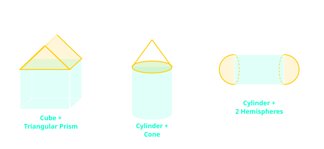
Volume of Composite Solids
To find the volume of a composite solid, add the volumes of the individual solids that make it up.
Example 1: Volume of a House
A house is shown in the diagram below. The length of the house is 10 m, the width is 10 m, the height of the walls is 8 m, and the height of the roof is 5 m. Calculate the total volume of the house.
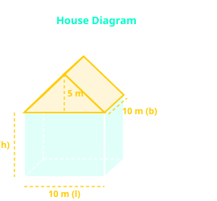
Step 1: Find the volume of the cuboid (main building)
Volume of a cuboid = length × breadth × height
l = 10 m, b = 10 m, h = 8 m
Cuboid volume = 10 × 10 × 8 = 800 m³
Step 2: Find the volume of the triangular prism (roof)
Volume of a triangular prism = (½ × base × height of triangle) × length
base = 10 m, triangle height = 5 m, length = 10 m
Roof volume = ½ × 10 × 5 × 10 = 250 m³
Step 3: Add the volumes together
Total volume = 800 m³ + 250 m³ = 1050 m³
Answer: The volume of the house is 1050 m³.
Example 2: Volume of a Capsule
The diagram below shows a solid shape consisting of a cylinder with a hemisphere attached to each end. The cylinder has a radius of 3 m and a length of 9 m. Each hemisphere has a radius of 3 m. Calculate the total volume of the solid.
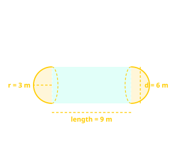
Step 1: Find the volume of the cylinder (middle section)
Volume of a cylinder = π × r² × length
r = 3 m, length = 9 m
Cylinder volume = π × 3² × 9 = π × 9 × 9 = 81π m³
Step 2: Find the volume of the two hemispheres (ends)
Two hemispheres together make one full sphere
Volume of a sphere = ⁴⁄₃ × π × r³
r = 3 m
Sphere volume = ⁴⁄₃ × π × 3³ = ⁴⁄₃ × π × 27 = 36π m³
Step 3: Add the volumes together
Total volume = 81π m³ + 36π m³ = 117π m³
If needed as a decimal: 117 × 3.14 ≈ 367.38 m³
Answer: The volume of the capsule is 117π m³ (approximately 367.38 m³).
Key Rule for Composite Solids:
• Volume = Volume of Part 1 + Volume of Part 2 + ...
• Always identify each individual solid first
• Two hemispheres = one full sphere
Surface Area of Composite Solids
To find the surface area of a composite solid, add the surface areas of the individual solids, but subtract the area of any faces that are joined together (hidden inside the composite shape).
Example 1: House (Cube + Triangular Prism)
The diagram below shows a house with a length of 10 m, a width of 10 m, a wall height of 8 m, and a roof height of 5 m. The roof has a slant height of approximately 7.07 m. Calculate the total surface area of the house (including the roof but excluding the floor).
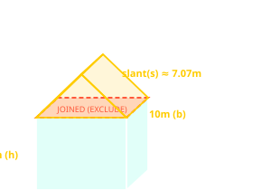
Step 1: Calculate the surface area of the cube (walls only, no floor)
Front and back walls: 2 × (10 × 8) = 160 m²
Side walls: 2 × (10 × 8) = 160 m²
Floor: 1 × (10 × 10) = 100 m²
Subtotal: 420 m²
Step 2: Calculate the surface area of the roof (triangular prism)
Gables (triangular ends): 2 × (½ × 10 × 5) = 50 m²
Slanted roof faces: 2 × (10 × 7.07) = 141.4 m²
Subtotal: 191.4 m²
Step 3: Add the surface areas together
Total surface area = 420 m² + 191.4 m² = 611.4 m²
Answer: The total surface area of the house is 611.4 m².
Example 2: Capsule (Cylinder + Two Hemispheres)
The diagram below shows a capsule consisting of a cylinder with a hemisphere attached to each end. The cylinder has a radius of 3 m and a height of 9 m. Each hemisphere has a radius of 3 m. Calculate the total surface area of the capsule.
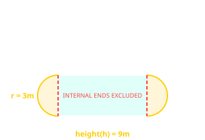
Note: The internal ends where the cylinder meets the hemispheres are not part of the surface area because they are joined together.
Step 1: Calculate the curved surface area of the cylinder
Curved surface area of a cylinder = 2 × π × r × h
r = 3 m, h = 9 m
Area = 2 × π × 3 × 9 = 54π m²
Step 2: Calculate the surface area of the two hemispheres
Two hemispheres together make one full sphere
Surface area of a sphere = 4 × π × r²
r = 3 m
Area = 4 × π × 3² = 4 × π × 9 = 36π m²
Step 3: Add the surface areas together
Total surface area = 54π m² + 36π m² = 90π m²
If needed as a decimal: 90 × 3.14 ≈ 282.74 m²
Answer: The total surface area of the capsule is 90π m² (approximately 282.74 m²).
Key Rule for Surface Area of Composite Solids:
• Add the surface areas of all individual solids
• Subtract the area of any faces that are joined together (hidden)
• For a capsule, the internal circular ends are excluded
Quantity Survey Application
In real life, composite solids appear in construction, manufacturing, and packaging. Quantity surveyors use these calculations to estimate materials needed (concrete, paint, insulation) and costs.
Example 1: Water Tank Capacity
A water tank consists of a cylinder with a hemispherical bottom. The cylinder has a radius of 2 m and a height of 5 m. The hemispherical bottom has the same radius of 2 m. Calculate the total capacity of the tank in cubic metres and litres.
Step 1: Calculate the volume of the cylinder
Volume of a cylinder = π × r² × h
r = 2 m, h = 5 m
Cylinder volume = π × 2² × 5 = 20π m³ ≈ 62.83 m³
Step 2: Calculate the volume of the hemisphere (bottom)
Volume of a hemisphere = ⅔ × π × r³
r = 2 m
Hemisphere volume = ⅔ × π × 2³ = ⅔ × π × 8 = 5.33π m³ ≈ 16.76 m³
Step 3: Add the volumes together
Total volume = 62.83 m³ + 16.76 m³ = 79.6 m³
Step 4: Convert to litres
1 m³ = 1000 litres
79.6 m³ × 1000 = 79,600 litres
Answer: The water tank has a capacity of approximately 79,600 litres.
Example 2: Concrete Beam Volume and Cost
A concrete beam consists of a rectangular prism (cuboid) base with a triangular prism on top. The beam has a length of 8 m, a width of 2 m, and a height of 2 m. The triangular prism on top has a base of 8 m and a height of 2 m. Calculate the total volume of concrete needed and the total cost at M150 per cubic metre.
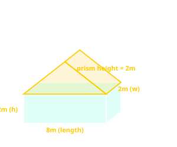
Step 1: Calculate the volume of the cuboid base
Volume of a cuboid = length × width × height
l = 8 m, w = 2 m, h = 2 m
Cuboid volume = 8 × 2 × 2 = 32 m³
Step 2: Calculate the volume of the triangular prism (top)
Volume of a triangular prism = (½ × base × height of triangle) × length
base = 8 m, triangle height = 2 m, length = 8 m
Prism volume = ½ × 8 × 2 × 8 = 64 m³
Step 3: Add the volumes together
Total volume = 32 m³ + 64 m³ = 96 m³
Step 4: Calculate the cost
Cost = volume × price per cubic metre
Cost = 96 m³ × M150/m³ = M14,400
Answer: The concrete beam requires 96 m³ of concrete, costing M14,400.
Summary Table: Composite Solids Rules
| Situation | Volume | Surface Area |
|---|---|---|
| Solids joined together | V₁ + V₂ + ... | Add, subtract joined faces |
| Joined at flat faces | No adjustment | Subtract joined area × 2 |
| Hole drilled through | Subtract hole volume | Add inner surface area |
| Container (open top) | Normal calculation | Subtract missing face area |
Quantity Survey Application Summary:
• Volume calculations determine how much material (concrete, water, etc.) is needed
• Cost = Volume × price per unit volume
• 1 m³ = 1000 litres (for water tank capacity)
NB: When calculating surface area of a composite solid:
- Identify which faces are exposed (visible from the outside)
- Faces that are joined together are not part of the surface area
- For a hole, the inner surface must be included
Quantity Survey Application:
Quantity surveyors use composite solid calculations to estimate:
- Concrete volume for foundations, beams, and columns
- Paint or plaster area for walls and ceilings
- Water tank capacity for storage and supply
- Material costs based on volume (e.g., concrete at M150/m³)